Семейный ресторан · Петергоф, ул. Шахматова
Home Cafe Петергоф
5,0 на Яндекс Картах и больше 1 500 оценок. Уютный зал, щедрые порции и красивая подача, а ещё доставка по Петергофу и окрестностям.
Настоящий островок тепла и уюта
- 5,0 · 1 556 оценок на Яндекс Картах
- «Хорошее место 2026»
- Сегодня с 12:00
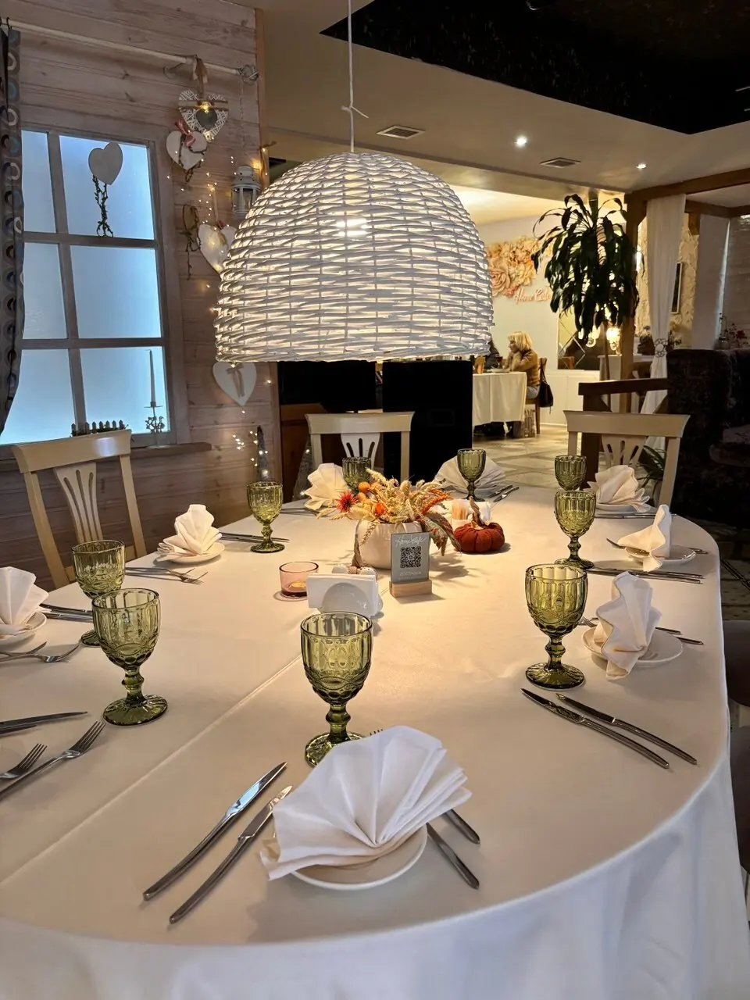
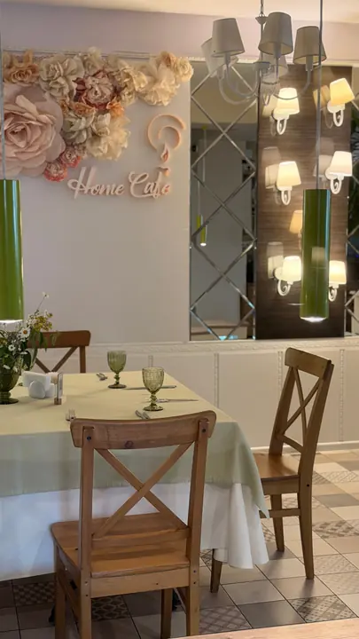
Раньше вы знали нас как «Тепло»
С 2019 года мы — Home Cafe Петергоф, но тепла меньше не стало: уютный зал с несколькими зонами в разном стиле, щедрые порции и красивая подача. Приходите всей семьёй: для детей есть свой уголок и детское меню, а для праздников — банкетный зал до 70 гостей.
- Банкетный залдо 70 гостей
- Детский уголоки детское меню
- Своя доставкабесплатно в ближней зоне от 1 350 ₽
- Wi-Fiможно поработать с ноутбуком
Сезонное предложение
Осеннее меню
- Салат из баклажан с томатами черри, мягким сыром и соусом сладкий чили650 ₽
220 г
- Салат с томлёной бужениной и огурцами по-баварски600 ₽
220 г
- Суп из белых грибов со сметаной500 ₽
300 мл
- Жареная камбала с овощным рататуем в соусе пилати1 000 ₽
450/100 г
- Блины с карамелизированными яблоками, корицей и пломбиром400 ₽
150 г
- Осенний ягодный пунш450 ₽
700 мл
Что попробовать
-
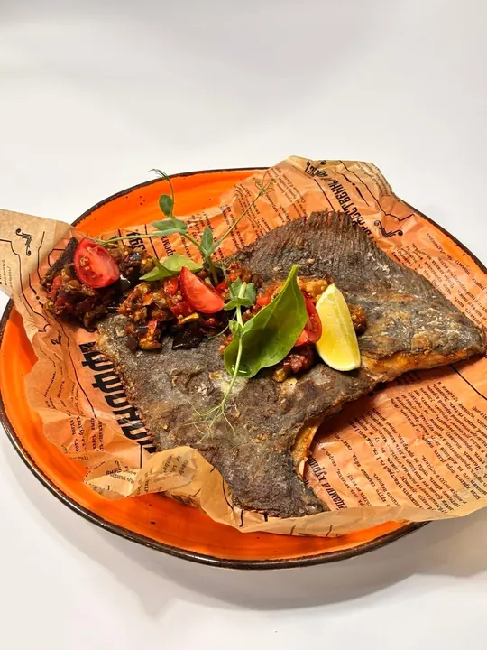
Жареная камбала с овощным рататуемиз осеннего меню1 000 ₽ -
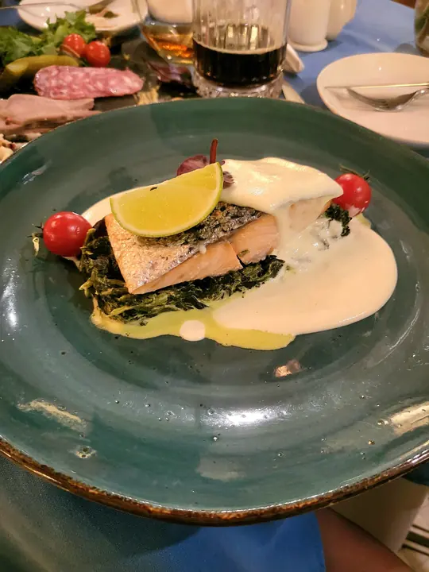
Филе лосося с белым соусом260 г · на подушке из шпината1 300 ₽ -
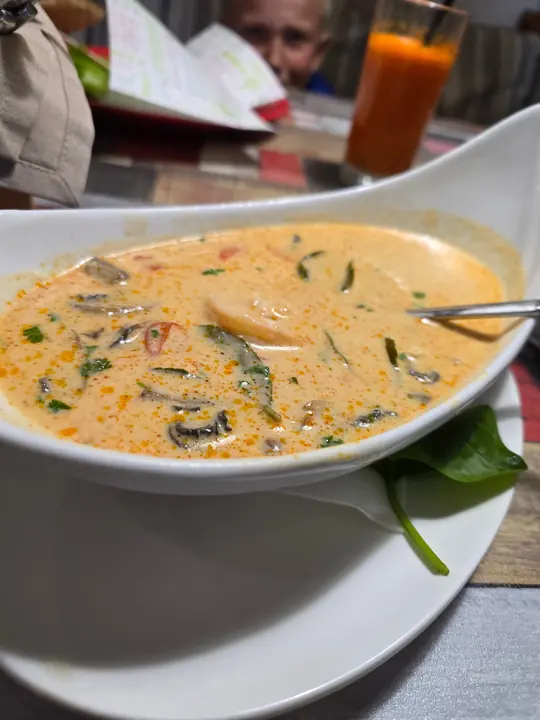
Суп том-ям300 мл · креветки, грибы, цыплёнок650 ₽ -
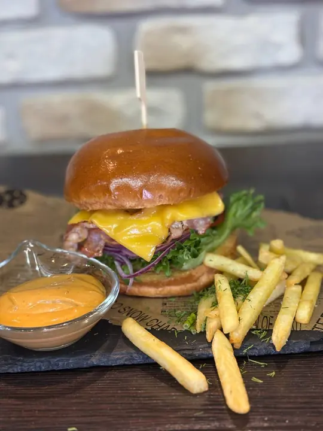
Бургер с мраморной говядинойбекон, чеддер, овощи, соус барбекю650 ₽
Доставка
Привезём блюда своими курьерами. Минимальная сумма заказа — 1 350 ₽.
-
Бесплатно
Зона 1
23 квартал, Сашино, Низино, Санино, Гостилицкое шоссе, гипермаркет «Лента», Фауна-2, Университет (ПУНК)
-
300 ₽
Зона 2
Старый Петергоф (за линией), весь Новый Петергоф, Ропшинское шоссе до КАД, Марьино, Ольгино, Князево, Владимировка
-
700 ₽
Зона 3
Стрельна, Новоселье, Горбунки, Разбегаево, Узигонты, Велигонты, СНТ Фауна, Сойкино, Пеники
Как заказать
- В магазине нашей группы ВКонтакте: выберите блюда и отметьте «Курьерская доставка».
- Или по телефону и в WhatsApp: +7 (921) 780-64-98.
Оплата
Картой онлайн, VK Pay или наличными курьеру. Заказ можно забрать и самим. Время доставки подскажем при заказе.
Для большой компании загляните в раздел меню «Боксы для компании»: мясной гриль на 3, 5 и 8 человек, бургеры, канапе и салаты в шотах.
Банкеты и праздники
Банкетный зал вмещает до 70 гостей. Проводим свадьбы, дни рождения, юбилеи и поминальные обеды. Есть три готовых банкетных меню.
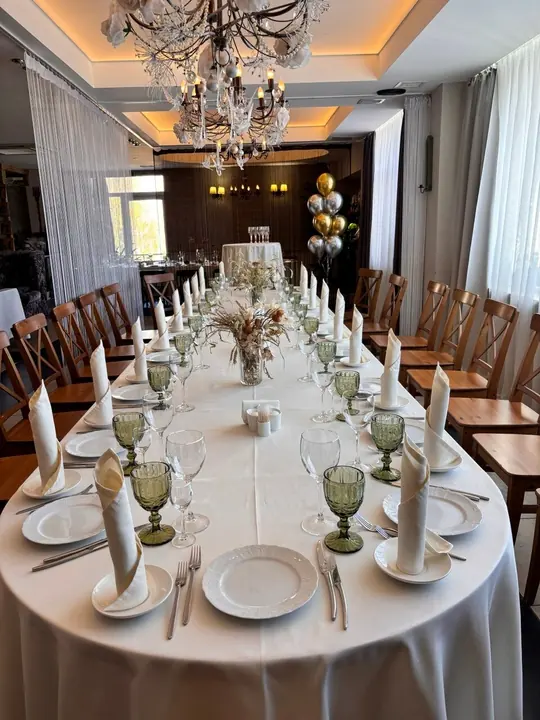
-
3 300 ₽ за гостя
Мясная гастрономия, тарталетки киш лорен, сельдь на пряном картофеле, оливье с телятиной, блины с грибным жюльеном, шашлык и рёбра гриль.
Полное меню
Закуски: ассорти из мясной гастрономии собственного производства (буженина, говяжий язык, куриный рулет со шпинатом), тарталетки киш лорен с грибами и пармезаном, сельдь на пряном картофеле, маринованные овощи и соленья, томатные сферы с сыром и чесноком.
Салаты: оливье с телятиной, тёплый салат с куриной печенью и вялеными томатами, Цезарь с филе цыплёнка.
Горячая закуска: блины, фаршированные грибным жюльеном.
Горячее: свиной шашлык, рёбра гриль, куриный шашлык с маринованным луком и шашлычным соусом, картофель айдахо.
Напитки и хлеб: свежевыпеченный хлеб, домашний морс из лесной ягоды с розмарином, вода.
-
4 400 ₽ за гостя
Лосось слабой соли, капрезе, фруктовое ассорти, салат с лососем и королевскими креветками. Горячее на выбор: дорадо или медальон из свиной вырезки.
Полное меню
Закуски: ассорти из мясной гастрономии, лосось слабой соли с каперсами и пряным маслом, тарталетки киш лорен, сельдь на пряном картофеле, капрезе, фруктовое ассорти.
Салаты: с копчёным лососем и королевскими креветками, Цезарь с филе цыплёнка, тёплый салат с куриной печенью и вялеными томатами.
Горячая закуска: жареный сыр с клюквенным конфитюром.
Горячее на выбор: филе дорадо с белым соусом и пюре из брокколи или медальон из свиной вырезки с грибным соусом и картофелем айдахо.
Напитки и хлеб: свежевыпеченный хлеб, домашний морс из лесной ягоды с розмарином, вода.
-
5 500 ₽ за гостя
Сырная тарелка, паштет из цесарки, брускетта с риетом из лосося, тёплый салат с телятиной. Горячее на выбор: стейк шатобриан или филе лосося.
Полное меню
Закуски: ассорти из мясной гастрономии (буженина, говяжий язык, ростбиф), лосось слабой соли с горчично-медовой заправкой, брускетта со сливочным риетом из копчёного лосося, сырная тарелка, паштет из цесарки с брусничным мармеладом, фруктовое ассорти.
Салаты: тёплый салат с телятиной, салат с копчёным лососем и королевскими креветками, Цезарь с цыплёнком.
Горячая закуска: жареный сыр с клюквенным конфитюром.
Горячее на выбор: стейк шатобриан из говяжьей вырезки с картофелем гратен и соусом демиглас или филе лосося с белым соусом на подушке из шпината.
Напитки и хлеб: свежевыпеченный хлеб, домашний морс из лесной ягоды с розмарином, вода.
Банкетное меню 2026 года. Подробности и бронь зала — по телефону.
Как у нас
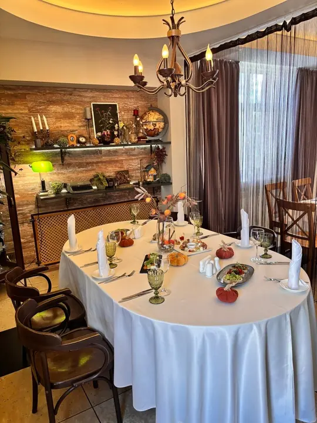
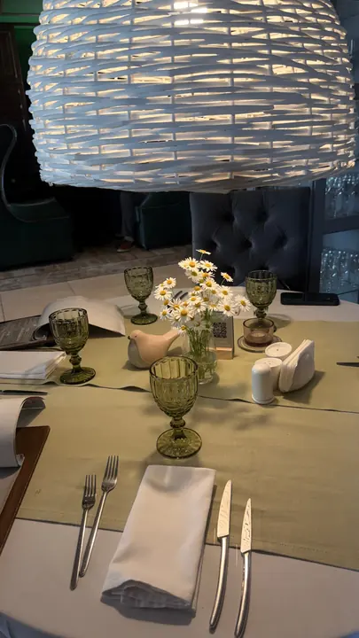
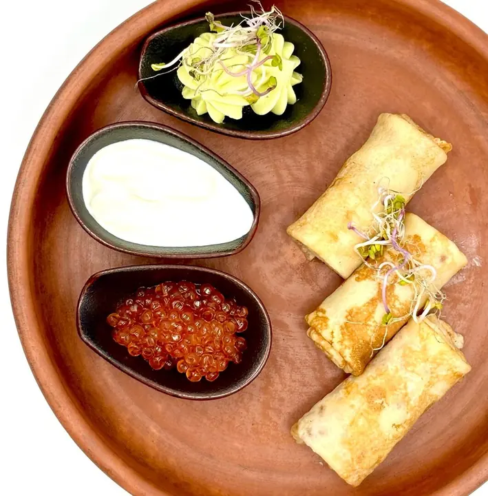
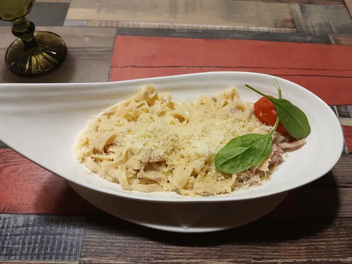
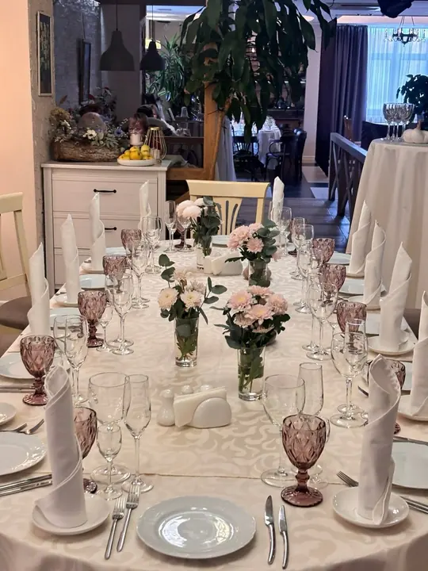
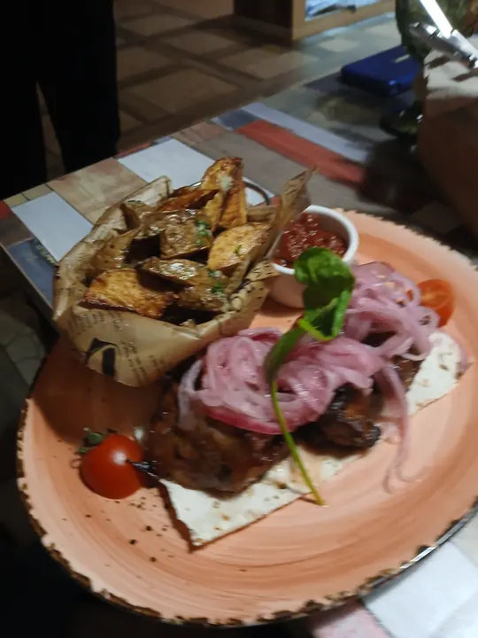
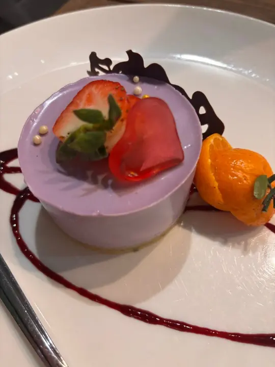
Что пишут гости
5,0 1 556 оценок на Яндекс Картах
Это не просто место, где можно поесть, это настоящий островок тепла и уюта… Порции щедрые, подача красивая. Но самое главное сокровище этого заведения — это его хозяйка, Юля.
Виктор · октябрь 2026
Потрясающая кухня, порции, обслуживание и атмосфера. Чувствуешь всегда тут как в маленькой Италии. Хотите душевно справить ДР, юбилей, свадьбу или просто посидеть? Вам сюда.
Светлана · октябрь 2026
Большое спасибо за организацию свадебного семейного банкета! Невероятно вкусные блюда, щедрые порции, внимательный заботливый персонал! Нам и гостям очень понравилось.
Яна · октябрь 2026
Обязательно берите тёплый салат с куриной печенью и вялеными томатами — это божественно!… И отдельный хит — рёбра барбекю. Пальчики оближешь!
Роман · август 2026
Самое любимое место для посиделок с семьёй, с друзьями. Еда вкусная, обслуживание приятное, хозяйка Юля само очарование.
Jekaterina · ноябрь 2026
Как всегда бывает с настоящим кладом, спрятано в неприметном месте. Интерьер очень приятный и стильный… Кухня выше всяческих похвал.
SaymonPh · август 2026
Как нас найти
- Адрес
- Петергоф, ул. Шахматова, 14 к1
2 этаж, отдельный вход с улицы - Часы работы
- вс–чт 12:00–22:00
пт–сб 12:00–23:00 - Телефоны
- +7 (921) 780-64-98 (есть WhatsApp)
+7 (812) 428-36-42 - ВКонтакте
- vk.com/homecafepeterhof
- Оплата
- карта, наличные, QR-код